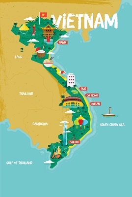

Geschichte
Der Beginn von Ho Chi Minh Stadt
Die Geschichte von Ho Chi Minh Stadt fängt zwischen dem 1. und 6. Jahrhundert mit den ersten Siedlungen der Khmer, eine Volksgruppe, an, die im heutigen Kambodscha noch vertreten ist. Zu dieser Zeit lebten in der Region noch keine Vietnamesen. Bis Anfang des 15. Jahrhunderts wurde diese Region, die nichts weiter als ein unzugängliches Dorf im Wald war, zu einer Stadt durch den Handel am Hafen.
Die Zeit der Nguyen Fürstentümer
Ab dem 17 Jahrhundert eroberten die Vietnamesen nach und nach die Region. Hier wurde sie zunächst Teil des Nguyen Fürstengebiets. Zu dieser Zeit erhielt die Stadt auch den Namen Saigon. Ende des 18 Jahrhunderts kam es in Vietnam zur Tây Sơn-Rebellion. Aus dem anfänglichen Bauernaufstand entwickelte sich nach und nach ein landesumfassender Bürgerkrieg, bei dem quasi jeder versuchte seine Position zu verbessern. Später besiegte der Prinz der Nguyen Fürstentümer Nguyễn die Tây-Sơn. Saigon wurde sein Verwaltungszentrum im Süden während die nördlicher gelegene Stadt Hue die Hauptstadt blieb.
Die französische Kolonialisierung von Saigon
In 1859 besetzten die Franzosen unter dem Vorwand Saigon, dass Kaiser Tu Duc, der inzwischen 4. Kaiser der Nguyen Dynastie, Missionare verfolgen ließ, als der Prinz militärische Hilfe der Franzosen beim Kampf gegen die Tây-Sơn erhielt. Saigon wurde schließlich zur Hauptstadt dieser französischen Kolonie erklärt und deshalb nach Vorbild französischer Städte umgestaltet. Während dieser Zeit wurde die vietnamesische Bevölkerung unterdrückt.
Der 2.te WK und 1. Indochinakrieg
Im Jahr 1941 nahmen dann die Japaner im zweiten Weltkrieg Saigon ein. Nach dem Waffenstillstand 1945 übernahmen nationalistische kommunistische Kräfte Việt-Minh in Vietnam die Herrschaft. Dieser Prozess, der als Augustrevolution in die Geschichte eingehen sollte, endete damit, dass der Revolutonär Hồ Chí Minh in Hanoi die Demokratischen Republik Vietnam ausrief, zu deren ersten Präsidenten er auch wurde. Britische Truppen wurden nach Saigon geschickt, um die dort verbliebenen japanischen Soldaten zu entwaffnen. Allerdings verhalfen sie dort den Franzosen zurück an die Macht, die sogleich die Kolonialisierung reinstallierten. Daraus resultierte der erste Indochinakrieg des kommunistischen Nordens Vietnams gegen den kolonialisierten Süden des Landes. Die Franzosen mussten 1954 kapitulieren. Trotz der Kapitulation hatte es Frankreich vorab noch geschafft eine ihnen wohlgesinnte Regierung in Südvietnam zu installieren. Vietnam blieb in Nord- und Südvietnam gespalten. Saigon wurde die Hauptstadt von Südvietnam.
Der 2. Indochinakrieg bzw. Vietnamkrieg
Diese Teilung resultierte direkt in einem Bürgerkrieg in Südvietnam, bei dem der Vietcong, mit Unterstützung durch Nordvietnam gegen die südvietnamesische Regierung kämpfte. Dabei involvierte sich besonders die USA als Unterstützer Südvietnams aus Furcht, dass ganz Südostasien unter kommunistische Herrschaft fallen könnte. Daraufhin unterstützten Russland und China Nordvietnam. Nachdem die USA eine Niederlage nach der anderen im unzugänglichen Gelände einstecken musste, handelte sie ab 1973 einen Waffenstillstand aus. Die US-Truppen wurden vollständig abgezogen, dafür entließ Nordvietnam die US-Kriegsgefangenen. Die Letzten Ausländer wurden aus Saigon in einer großangelegten Evakuierungsaktion namens Operation Frequent Wind innerhalb weniger Tage mit Hubschraubern ausgeflogen. Mit dem Einmarsch der nordvietnamesischen Truppen am 1. Mai 1975 in Saigon endete der Vietnamkrieg.
Wiedervereinigung Vietnams
Am 2. Juli 1976 wurde Vietnam wiedervereint. An diesem Tag wurde Saigión auch in Ho Chi Minh Stadt, nach dem ehemaligen Staatspräsidenten umbenannt. Die neue Hauptstadt des Landes wurde jedoch Hanoi. Nach der Übernahme Saigons durch das Nordvietnam verließen viele Menschen als Boatpeople Vietnam. Andere, die mit den USA Kooperiert hatten, landeten häufig in Umerziehungslagern. Entsprechend stagnierte die Kultur in Ho Chi Minh Stadt. Erst mit der Liberalisierung der Wirtschaft Ende der 80er entwickelte sich Ho Chi Minh zu einem Finanz- und Wirtschaftszentrum, jedoch auch mit negativen Folgen einer steigende Kriminalitätslage.
